11 / LIVE-ACTION CINEMATOGRAPHY
Cinematography
Showreel.
Light, framing and movement in live-action storytelling.
/ FROM THE REEL
Selected frames.
Stills taken directly from the original showreel.
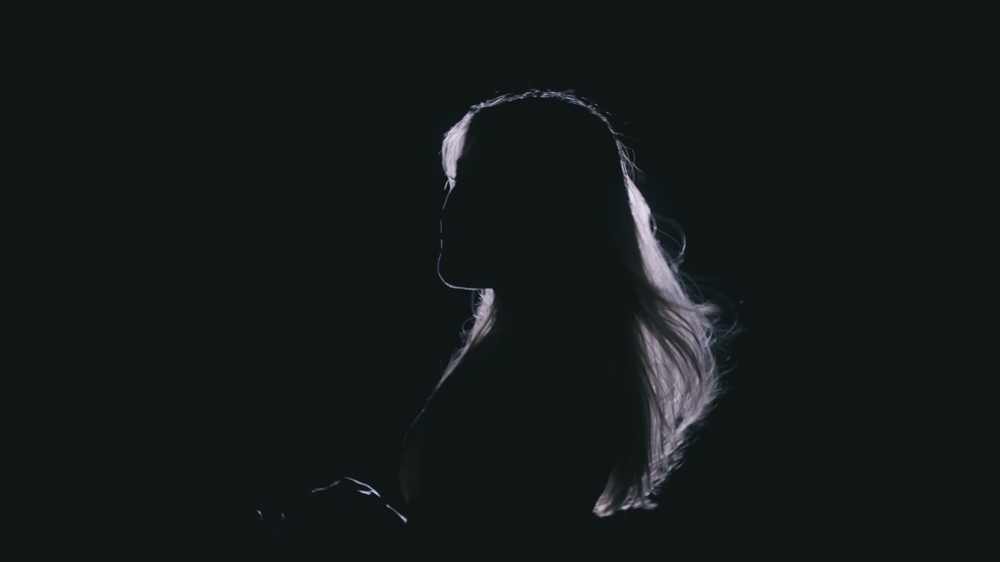
Rim-lit silhouette
Light traces the profile against a dark background.
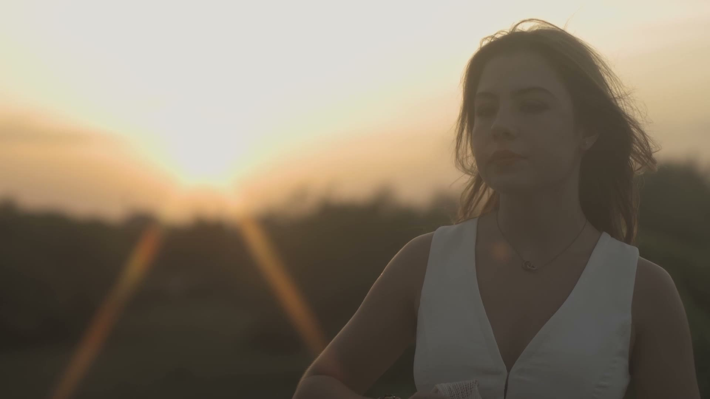
Sunset portrait
Warm haze and backlight soften the close-up.
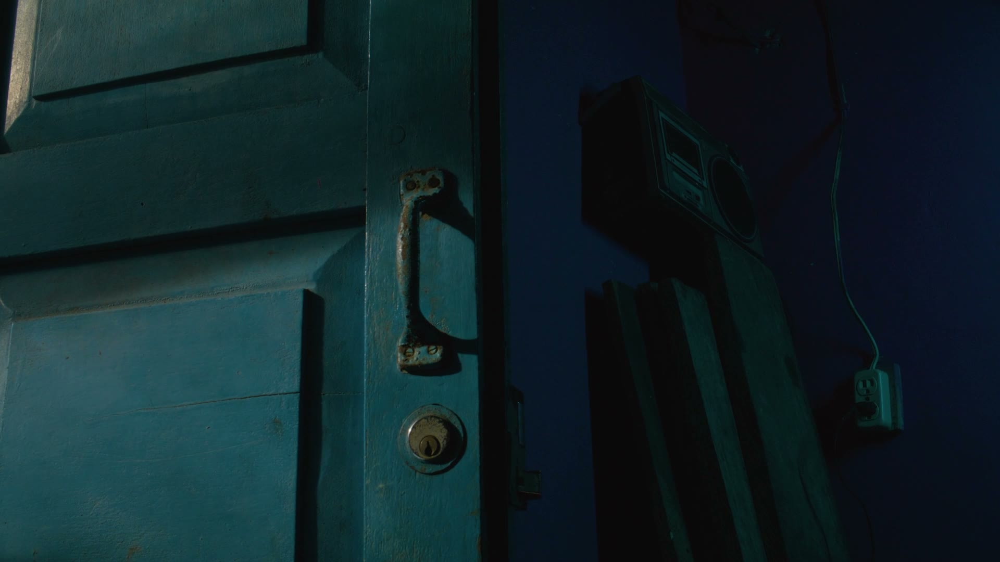
Blue doorway
A cool palette shapes the interior.
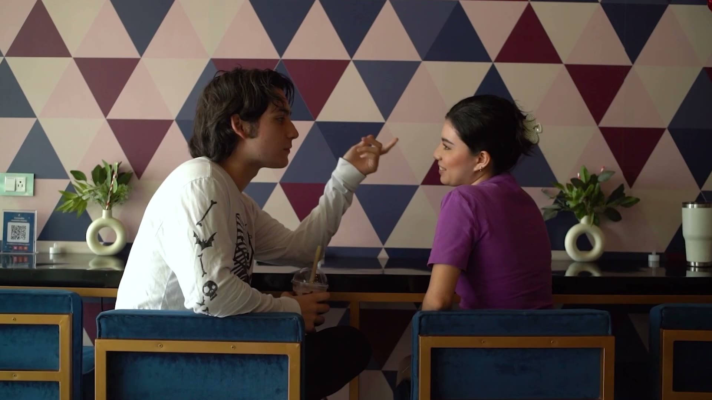
Café conversation
A two-shot with a graphic backdrop.
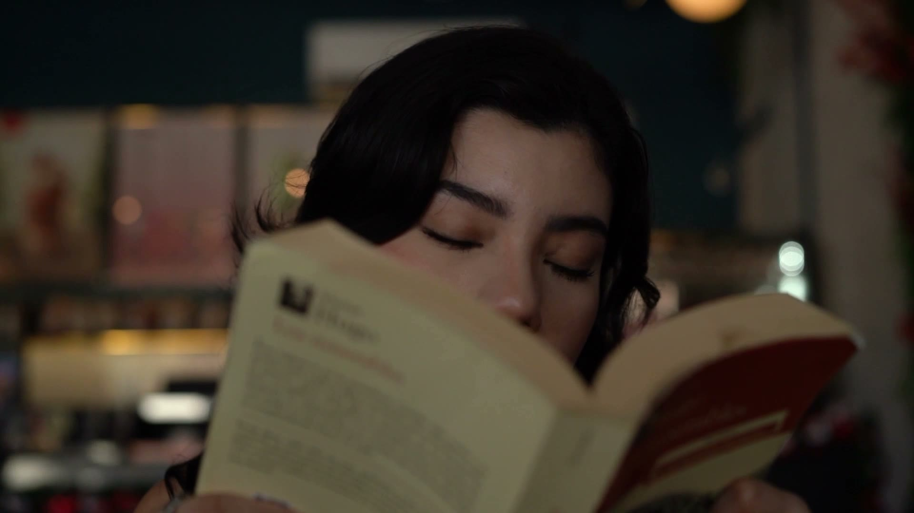
Reading close-up
Shallow focus holds on the eyes beyond the page.
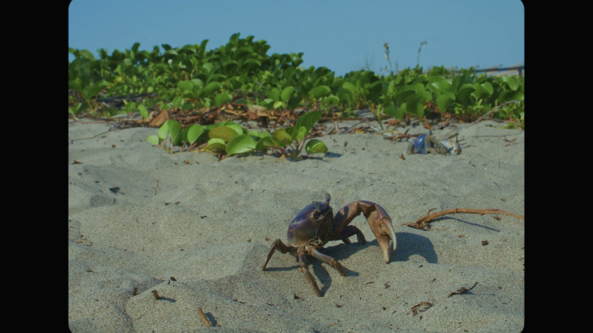
Beach detail
A low viewpoint brings the crab into the foreground.
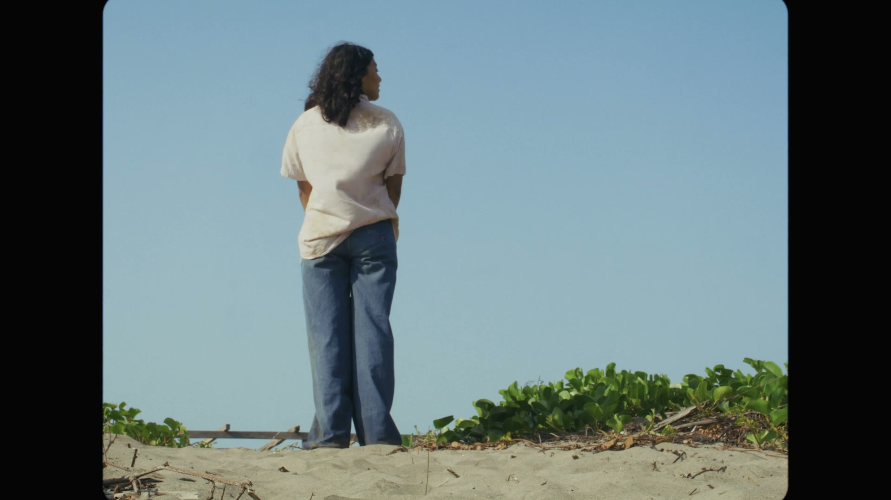
Open sky
The figure stands against a broad field of blue.
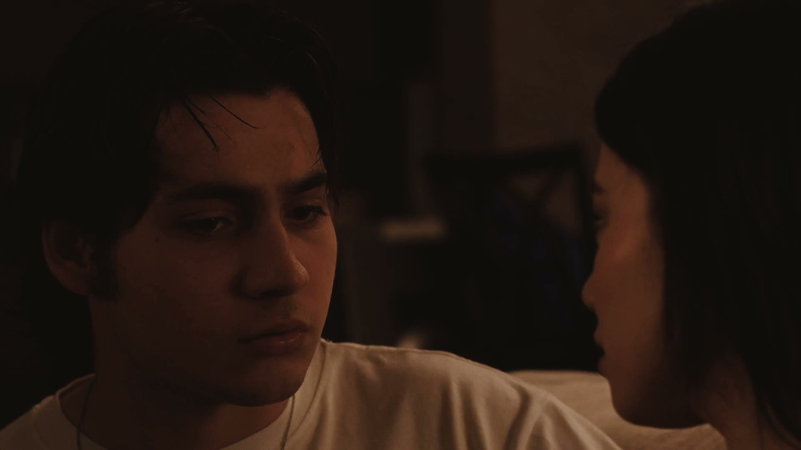
Warm interior
Low, warm light draws out the expression.
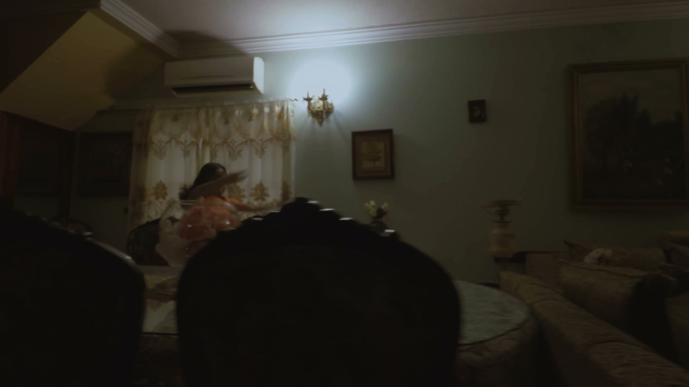
Interior movement
A wide composition holds the dancer within the room.
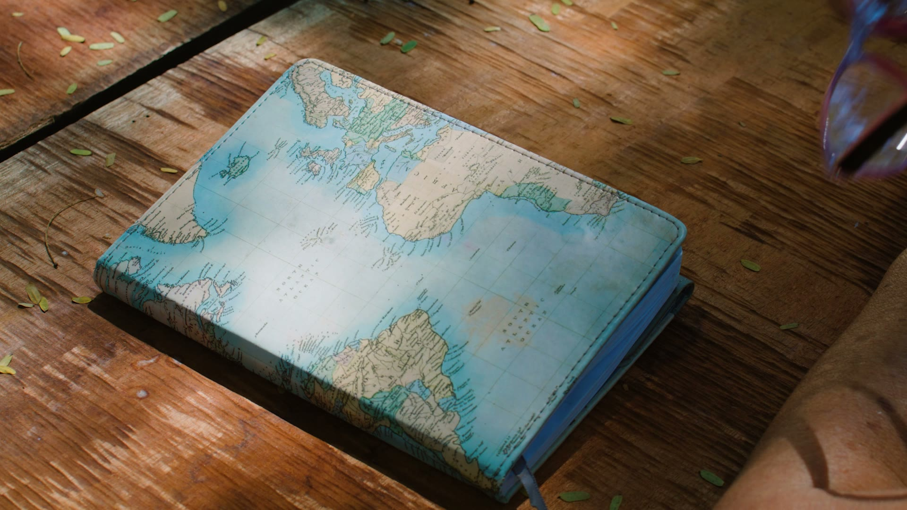
Map book
Daylight reveals the texture of the cover and table.
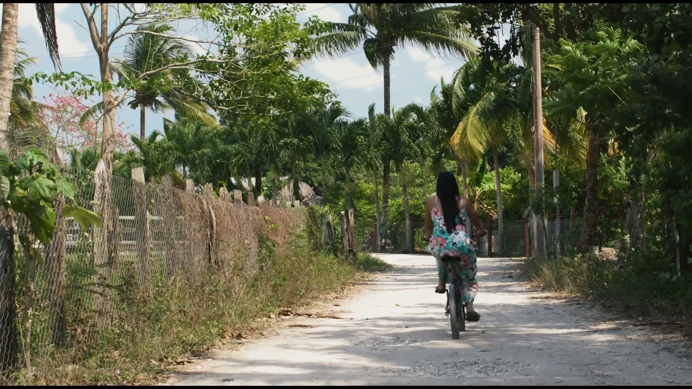
Road through the palms
Movement leads the eye down the path.
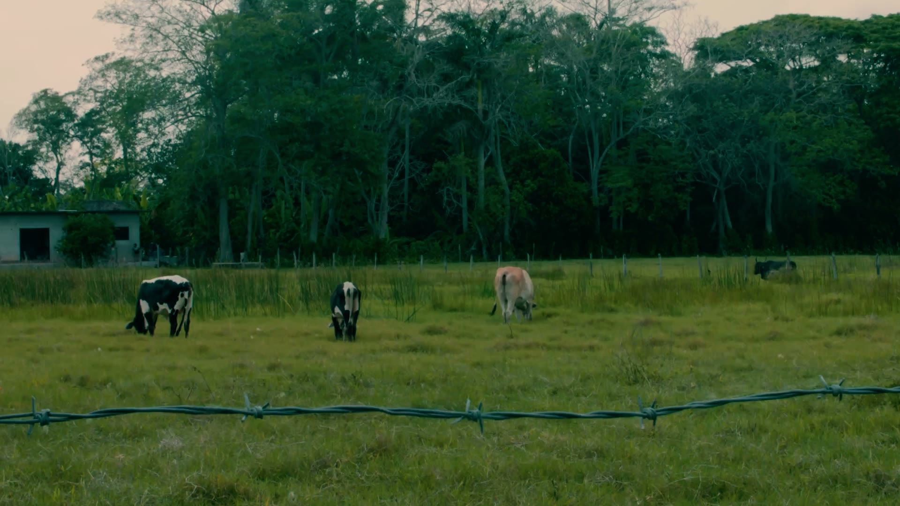
Pasture
A quiet landscape with cattle across the frame.
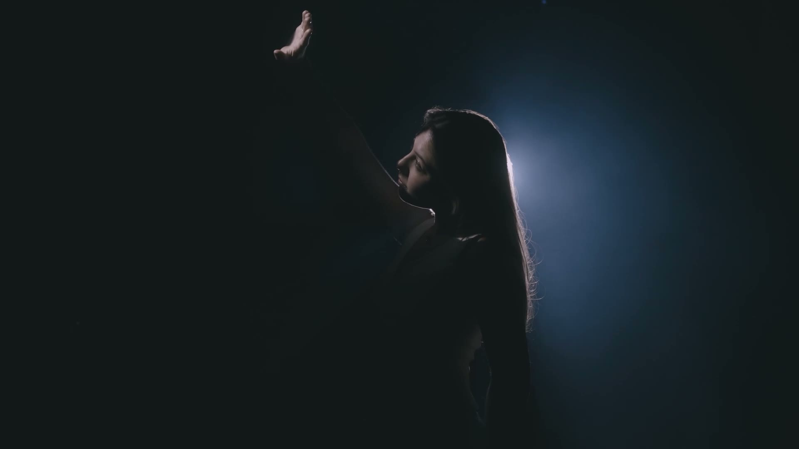
Blue backlight
Haze and edge light separate the portrait from darkness.
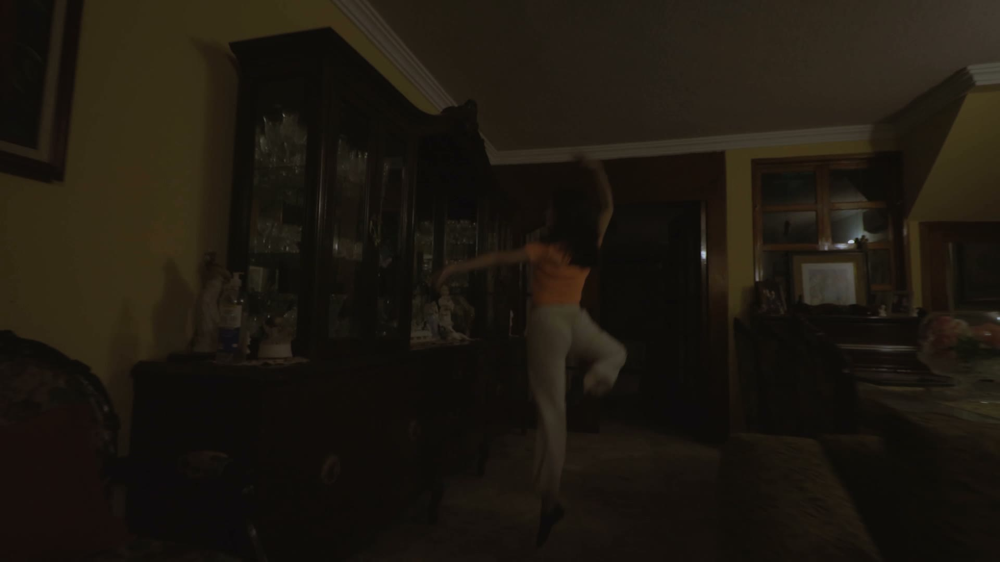
Dance in the room
A second wide view carries the movement through the space.
/ OVERVIEW
A camera-led approach to light.
This reel brings together live-action work from my practice as a director, cinematographer and camera operator. It moves between exterior daylight, window-lit scenes and darker portraits, showing how direction of light and framing shape the feeling of a shot.
My experience behind the camera informs my CG lighting work: I look for motivated sources, clear subject separation and a consistent visual mood across a sequence.
Role and reel credits
Joshua Medina · Director / Cinematographer / Camera Operator. A selection of live-action work presented as a single reel.